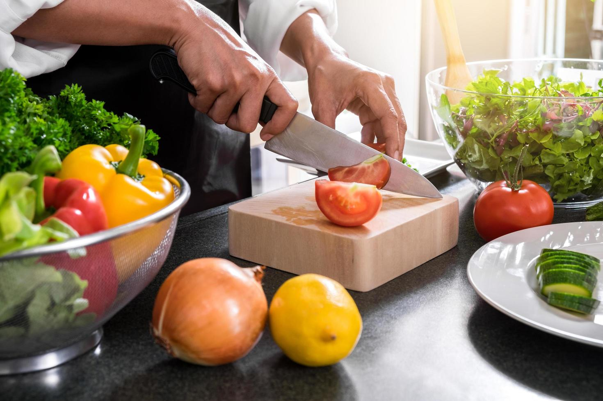

Los muslos de pollo al horno con verduras y patatas es un plato muy sencillo de hacer, rico y jugoso, aqui vas a encontrar todo lo que necesitas para realizar este plato.
Ingredientes de la crema fría de calabaza y naranja para 4 personas:
4 muslos de pollo, con sus contramuslos
4 patatas
1 cebolla
2 zanahorias
2 tomates
4 dientes de ajo
1 pimiento rojo
Tomillo seco
Romero Seco
Sal y Pimienta
Aceite
Elaboración:
Paso 1. Pelamos la cebolla y las patatas. Cortamos las patatas y la zanahoria en rodajitas finas y la cebolla en juliana es decir, en finas tiras. Cortamos también el tomate y el pimiento en cubos grandes. Colocamos todos estos ingredientes, junto con los dientes de ajo enteros y sin pelar, en el fondo de una bandeja para horno y los disponemos sobre éste uniformemente.

Paso 2. Salpimentamos toda la verdura y sobre ella, ponemos los muslos de pollo. Los regamos con un vasito de agua. Salpimentamos también los muslos y añadimos un chorrito de aceite de oliva y un poco de tomillo y romero secos, que les dará un toque extra
Paso 3. Continuamos con la elaboración de nuestros muslos de pollo al horno con verduras y patatas. Ahora introducimos la bandeja en el horno, previamente calentado a 200ºC, calor arriba y abajo. Dejamos aquí en torno a 40-45 minutos, hasta que los muslos del pollo estén dorados.
Paso 4. Pasado el tiempo, sacamos la bandeja del horno y listo para emplatar y comer